Demo CRM — отчёт GUI-самотеста
Тест выполнен самим приложением: оно вело собственное окно по шагам, рисовало номер шага на плашке и снимало себя. Шаги 15–18 — реальный вызов SDK: нажата настоящая кнопка «Создать из реестра», запущен Contragenti; шаги 19–33 — разделы CRM: клиенты, контакты, лиды, сделки, номенклатура, заказы с проводкой остатков, календарь, главная.
Launcher: F:\grok\contragents data gov\company_search.py
| # | Шаг | Статус | Проверка | Снимки |
|---|---|---|---|---|
| 01 | Стартовое окно, база пуста | OK | в списке 0, в базе 0 | 01_start.png |
| 02 | Импорт карточки UNISIM-SOFT из XML Contragenti | OK | результат 0, в списке 1, сообщение зелёное=True | 02_import_unisim.png |
| 03 | Импорт карточки ALFA-VIS COM | OK | результат 0, в списке 2 | 03_import_alfavis.png |
| 04 | Повторный импорт UNISIM — отсечён как дубликат | OK | результат 1, в базе 2, сообщение янтарное=True | 04_duplicate.png |
| 05 | Фильтр «ALFA» оставляет одну запись | OK | в списке 1 | 05_filter_alfa.png |
| 06 | Фильтр сброшен — снова две записи | OK | в списке 2 | 06_filter_clear.png |
| 07 | Панель настроек раскрывается внутри окна (без модального диалога) | OK | сообщение: Укажите путь к Contragenti.exe и нажмите «Сохранить». | 07_settings_open.png |
| 08 | Панель настроек скрыта повторным нажатием | OK | 08_settings_close.png | |
| 09 | Навигация: раздел «Главная» с дашлетами (стиль EspoCRM) | OK | 09_home.png | |
| 10 | Навигация: раздел «Лиды» открывается — пустой список с кнопками «Создать лид» и «В клиенты» | OK | раздел=3, записей 0 | 10_nav_leads_empty.png |
| 11 | Навигация: возврат в «Клиенты» | OK | 11_accounts.png | |
| 12 | «Удалить» без выбранной строки — предупреждение, ничего не удалено | OK | в базе 2, сообщение янтарное=True | 12_delete_noselect.png |
| 13 | «Удалить» с выбранной строкой — просьба подтвердить, база не тронута | OK | в базе 2, сообщение янтарное=True | 13_delete_confirm_ask.png |
| 14 | Повторное «Удалить» — клиент ALFA-VIS удалён (останется UNISIM) | OK | в базе 1, в списке 1, сообщение зелёное=True | 14_delete_done.png |
| 15 | Фильтр «ALFA-VIS COM» введён — по нему SDK запустит Contragenti | OK | launcher: F:\grok\contragents data gov\company_search.py | 15_sdk_filter.png |
| 16 | Реальный вызов SDK: Contragenti запущен, нашёл ALFA-VIS (кэш date.gov.md или портал) и вернул XML-карточку | OK | ожидание 2 с, снимков во время работы 4, в базе 1 → 2, сообщение зелёное=True; | 16_sdk_added.png +4 |
| 17 | Карточка из Contragenti в списке CRM (адрес, форма, администратор — данные реестра) | OK | в списке 2 | 17_sdk_list.png |
| 18 | Повторный вызов SDK — та же карточка отсечена как дубликат, база не выросла | OK | ожидание 2 с, в базе 2, сообщение янтарное=True; | 18_sdk_duplicate.png +4 |
| 19 | Клиенты: в карточке сохранены тип, телефон, e-mail и контактное лицо | OK | Карточка клиента «Societatea cu Răspundere Limitată ALFA-VIS COM» сохранена. | 19_client_card.png |
| 20 | Контакты: создан контакт «Yevgeny Bubis», привязан к клиенту ALFA-VIS | OK | контактов 1; Добавлено: контакт «Yevgeny Bubis». | 20_contact_new.png |
| 21 | Лиды: создан лид «Agro-Prim SRL» — в работе, источник «Выставка» | OK | лидов 1 | 21_lead_new.png |
| 22 | Лиды: «В клиенты» — создан клиент Agro-Prim SRL, статус лида «Конвертирован» | OK | клиентов 2 → 3, статус лида: Конвертирован | 22_lead_convert.png |
| 23 | Сделки: создана сделка 48 500 MDL для Agro-Prim на этапе «Предложение» | OK | сделок 1 | 23_deal_new.png |
| 24 | Сделки: этап переведён в «Выиграна» (воронка) | OK | этап в базе: Выиграна | 24_deal_won.png |
| 25 | Номенклатура: товар (остаток 5), услуга (час) и изделие собственного производства | OK | позиций 3 | 25_items.png |
| 26 | Заказы: заказ на продажу №0001 — две строки (2 насоса + 8 ч монтажа), итого 27 800 MDL | OK | строк 2, итого 27800.00 | 26_order_lines.png |
| 27 | Заказы: статус «Выполнен» + «Провести» — остаток насосов списан 5 → 3 | OK | остаток T-001 = 3; Заказ проведён: списано со склада по 2 строкам | 27_order_posted.png |
| 28 | Заказы: производственный заказ №0002 проведён — оприходовано 2 изделия (0 → 2) | OK | остаток P-001 = 2; Заказ проведён: оприходовано изделий по 1 строкам | 28_order_production.png |
| 29 | Календарь: звонок (просрочен на 2 дня) и встреча через 3 дня | OK | открытых задач 2 | 29_tasks.png |
| 30 | Календарь: фильтр «Просроченные» — одна задача | OK | в списке 1 | 30_tasks_overdue.png |
| 31 | Календарь: «Выполнено» — просроченная задача закрыта, список пуст | OK | в списке 0; Задача отмечена выполненной. | 31_task_done.png |
| 32 | Главная: показатели — клиенты, открытые сделки, заказы месяца, просроченные задачи, номенклатура | OK | клиенты=3, сделки=0 (0), заказы=111 800 (2), просрочено=0, номенклатура=3 | 32_dashboard.png |
| 33 | Генератор тестовых данных: клиентов 13, контактов 20, лидов 12, сделок 11, номенклатуры 15, заказов 16 (строк 33), задач 24 — показатели на «Главной» | OK | KPI: клиенты=16, сделки=917 000 (7), заказы=111 800 (2), просрочено=2, номенклатура=18 | 33_seed_dashboard.png |
| 34 | Заказы на полном наборе: продажа / услуга / производство, все статусы | OK | в списке 18, в базе 18 | 34_seed_orders.png |
| 35 | Номенклатура на полном наборе: пресет «Нет на складе» | OK | без остатка 2 из 18 | 35_seed_items.png |
| 36 | Календарь на полном наборе: просроченные задачи выделены пресетом | OK | просроченных 2 | 36_seed_tasks_overdue.png |
| 37 | Итоговое состояние окна: клиенты из SDK, лида и генератора | OK | в базе 16 клиентов | 37_final.png |
01Стартовое окно, база пуста — OK
в списке 0, в базе 0
Строка сообщений: База: F:\grok\contragents data gov\crm_delphi\shots_gui\test_clients.db | клиентов: 0
после шага: 01_start.png

02Импорт карточки UNISIM-SOFT из XML Contragenti — OK
результат 0, в списке 1, сообщение зелёное=True
Строка сообщений: Добавлен клиент: CENTRUL DE ELABORARE UNISIM-SOFT S.R.L. (IDNO 1003600116460)
после шага: 02_import_unisim.png

03Импорт карточки ALFA-VIS COM — OK
результат 0, в списке 2
Строка сообщений: Добавлен клиент: Societatea cu Raspundere Limitata ALFA-VIS COM (IDNO 1017600018242)
после шага: 03_import_alfavis.png

04Повторный импорт UNISIM — отсечён как дубликат — OK
результат 1, в базе 2, сообщение янтарное=True
Строка сообщений: Уже в базе: CENTRUL DE ELABORARE UNISIM-SOFT S.R.L. (IDNO 1003600116460)
после шага: 04_duplicate.png

05Фильтр «ALFA» оставляет одну запись — OK
в списке 1
Строка сообщений: Фильтр «ALFA»: показано 1 из 2
после шага: 05_filter_alfa.png

06Фильтр сброшен — снова две записи — OK
в списке 2
Строка сообщений: Фильтр «ALFA»: показано 1 из 2
после шага: 06_filter_clear.png

07Панель настроек раскрывается внутри окна (без модального диалога) — OK
сообщение: Укажите путь к Contragenti.exe и нажмите «Сохранить».
Строка сообщений: Укажите путь к Contragenti.exe и нажмите «Сохранить».
после шага: 07_settings_open.png

08Панель настроек скрыта повторным нажатием — OK
Строка сообщений: Укажите путь к Contragenti.exe и нажмите «Сохранить».
после шага: 08_settings_close.png

09Навигация: раздел «Главная» с дашлетами (стиль EspoCRM) — OK
Строка сообщений: Укажите путь к Contragenti.exe и нажмите «Сохранить».
после шага: 09_home.png
{kind=link}
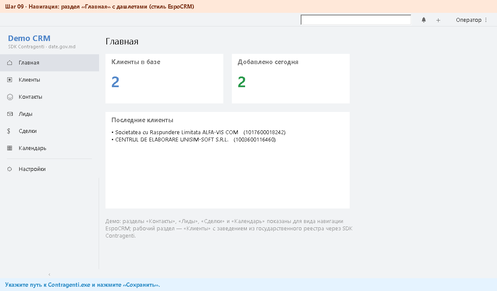
10Навигация: раздел «Лиды» открывается — пустой список с кнопками «Создать лид» и «В клиенты» — OK
раздел=3, записей 0
Строка сообщений: Укажите путь к Contragenti.exe и нажмите «Сохранить».
после шага: 10_nav_leads_empty.png

11Навигация: возврат в «Клиенты» — OK
Строка сообщений: Укажите путь к Contragenti.exe и нажмите «Сохранить».
после шага: 11_accounts.png

12«Удалить» без выбранной строки — предупреждение, ничего не удалено — OK
в базе 2, сообщение янтарное=True
Строка сообщений: Выберите клиента в списке, затем нажмите «Удалить».
после шага: 12_delete_noselect.png

13«Удалить» с выбранной строкой — просьба подтвердить, база не тронута — OK
в базе 2, сообщение янтарное=True
Строка сообщений: Удалить «Societatea cu Raspundere Limitata ALFA-VIS COM»? Нажмите «Удалить» ещё раз для подтверждения.
после шага: 13_delete_confirm_ask.png

14Повторное «Удалить» — клиент ALFA-VIS удалён (останется UNISIM) — OK
в базе 1, в списке 1, сообщение зелёное=True
Строка сообщений: Удалён клиент «Societatea cu Raspundere Limitata ALFA-VIS COM». Записей: 1
после шага: 14_delete_done.png

15Фильтр «ALFA-VIS COM» введён — по нему SDK запустит Contragenti — OK
launcher: F:\grok\contragents data gov\company_search.py
Строка сообщений: Фильтр «ALFA-VIS COM»: показано 0 из 1
после шага: 15_sdk_filter.png

16Реальный вызов SDK: Contragenti запущен, нашёл ALFA-VIS (кэш date.gov.md или портал) и вернул XML-карточку — OK
ожидание 2 с, снимков во время работы 4, в базе 1 → 2, сообщение зелёное=True;
Строка сообщений: Добавлен клиент: Societatea cu Răspundere Limitată ALFA-VIS COM (IDNO 1017600018242)
во время работы SDK: 16_sdk_wait_crm.png
{kind=link}
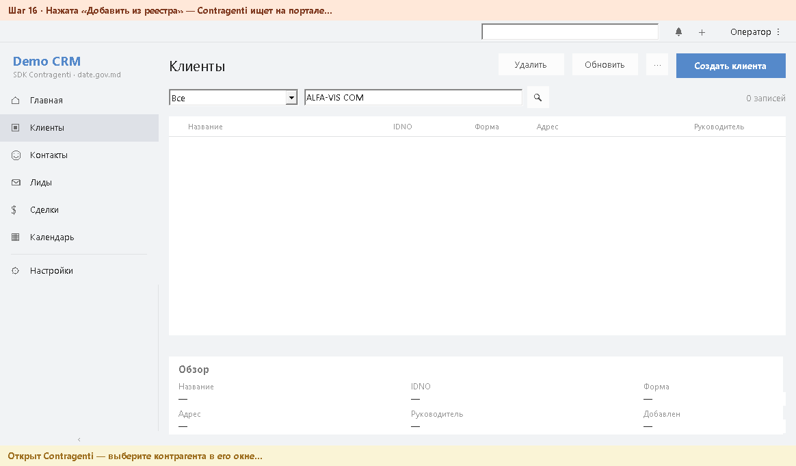
во время работы SDK: 16_sdk_wait2_win1.png
{kind=link}
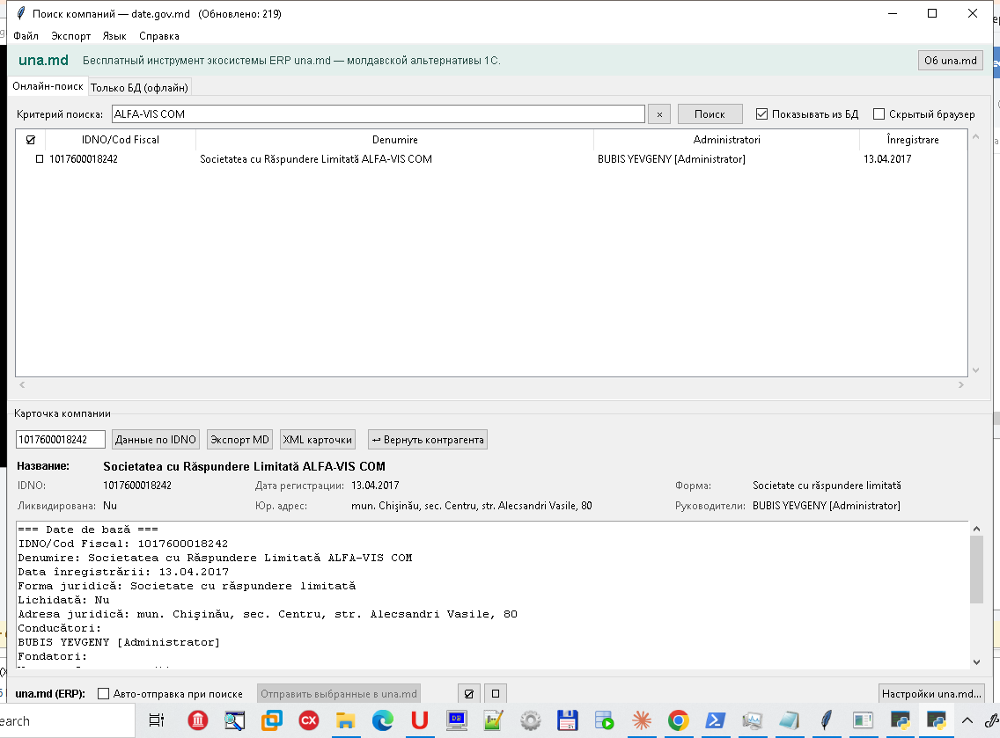
во время работы SDK: 16_sdk_3_contragenti_results.png

во время работы SDK: 16_sdk_4_contragenti_card_return.png

после шага: 16_sdk_added.png

17Карточка из Contragenti в списке CRM (адрес, форма, администратор — данные реестра) — OK
в списке 2
Строка сообщений: Добавлен клиент: Societatea cu Răspundere Limitată ALFA-VIS COM (IDNO 1017600018242)
после шага: 17_sdk_list.png

18Повторный вызов SDK — та же карточка отсечена как дубликат, база не выросла — OK
ожидание 2 с, в базе 2, сообщение янтарное=True;
Строка сообщений: Уже в базе: Societatea cu Răspundere Limitată ALFA-VIS COM (IDNO 1017600018242)
во время работы SDK: 18_sdk_wait_crm.png
{kind=link}
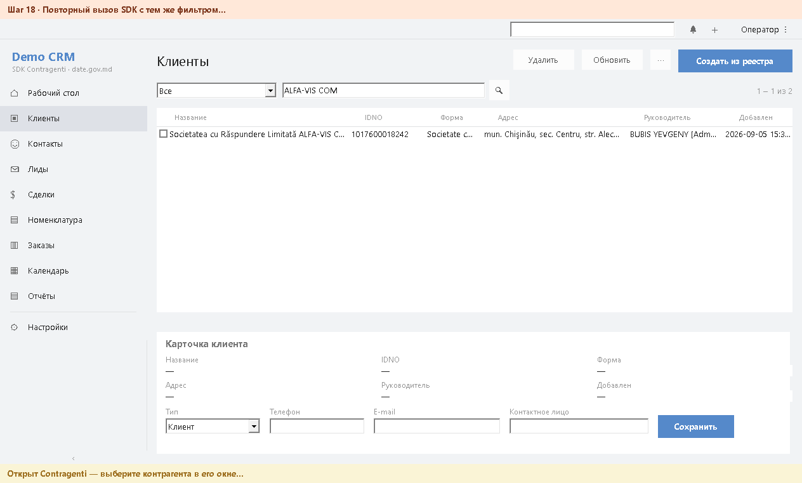
во время работы SDK: 18_sdk_wait2_win1.png
{kind=link}
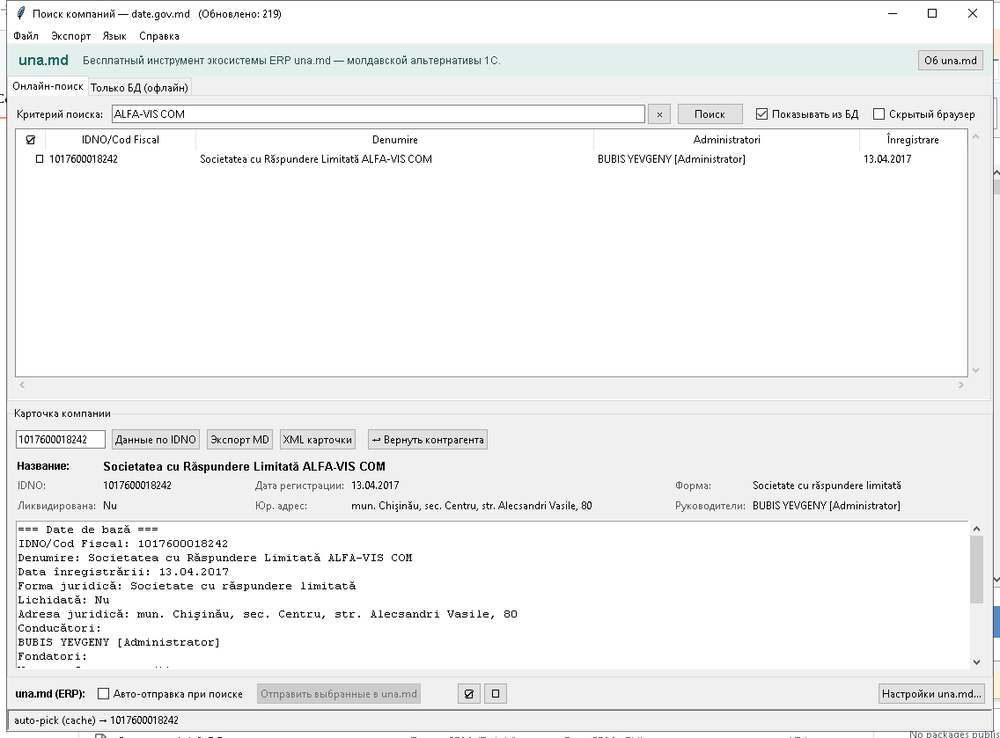
во время работы SDK: 18_sdk_3_contragenti_results.png

во время работы SDK: 18_sdk_4_contragenti_card_return.png

после шага: 18_sdk_duplicate.png

19Клиенты: в карточке сохранены тип, телефон, e-mail и контактное лицо — OK
Карточка клиента «Societatea cu Răspundere Limitată ALFA-VIS COM» сохранена.
Строка сообщений: Карточка клиента «Societatea cu Răspundere Limitată ALFA-VIS COM» сохранена.
после шага: 19_client_card.png
{kind=link}
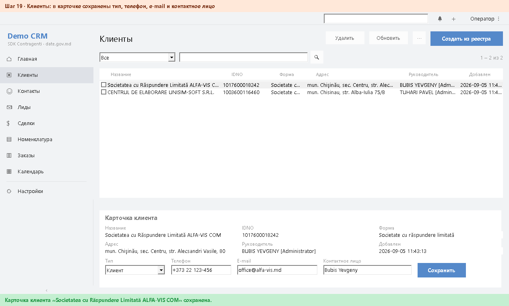
20Контакты: создан контакт «Yevgeny Bubis», привязан к клиенту ALFA-VIS — OK
контактов 1; Добавлено: контакт «Yevgeny Bubis».
Строка сообщений: Добавлено: контакт «Yevgeny Bubis».
после шага: 20_contact_new.png
{kind=link}
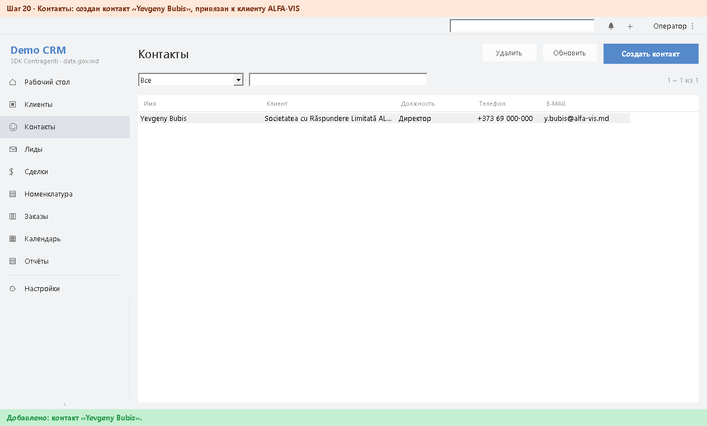
21Лиды: создан лид «Agro-Prim SRL» — в работе, источник «Выставка» — OK
лидов 1
Строка сообщений: Добавлено: лид «Ion Popescu».
после шага: 21_lead_new.png
{kind=link}
22Лиды: «В клиенты» — создан клиент Agro-Prim SRL, статус лида «Конвертирован» — OK
клиентов 2 → 3, статус лида: Конвертирован
Строка сообщений: Лид конвертирован: создан клиент «Agro-Prim SRL»
после шага: 22_lead_convert.png
{kind=link}
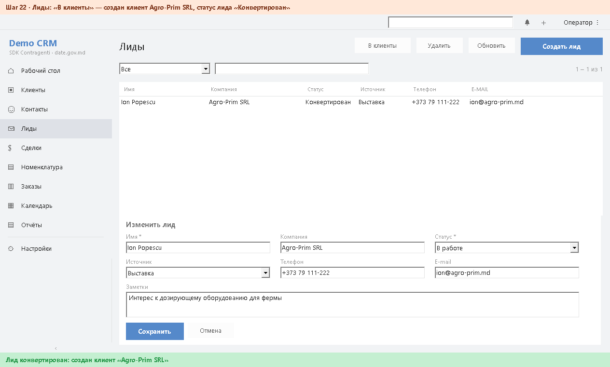
23Сделки: создана сделка 48 500 MDL для Agro-Prim на этапе «Предложение» — OK
сделок 1
Строка сообщений: Добавлено: сделку «Поставка дозирующей установки».
после шага: 23_deal_new.png
{kind=link}
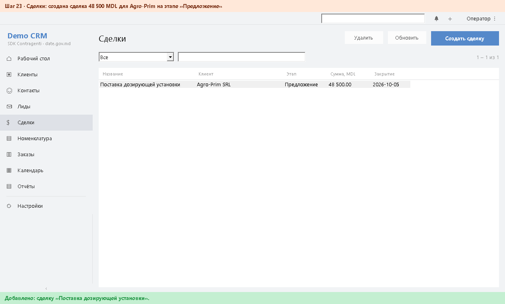
24Сделки: этап переведён в «Выиграна» (воронка) — OK
этап в базе: Выиграна
Строка сообщений: Сохранено: сделку «Поставка дозирующей установки».
после шага: 24_deal_won.png
{kind=link}
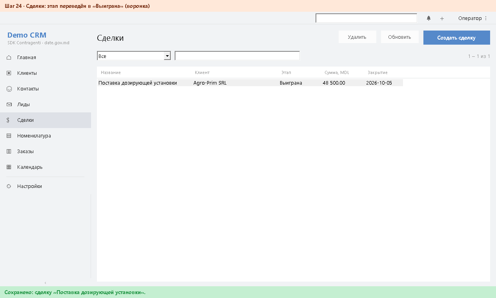
25Номенклатура: товар (остаток 5), услуга (час) и изделие собственного производства — OK
позиций 3
Строка сообщений: Добавлено: позицию «P-001».
после шага: 25_items.png
{kind=link}
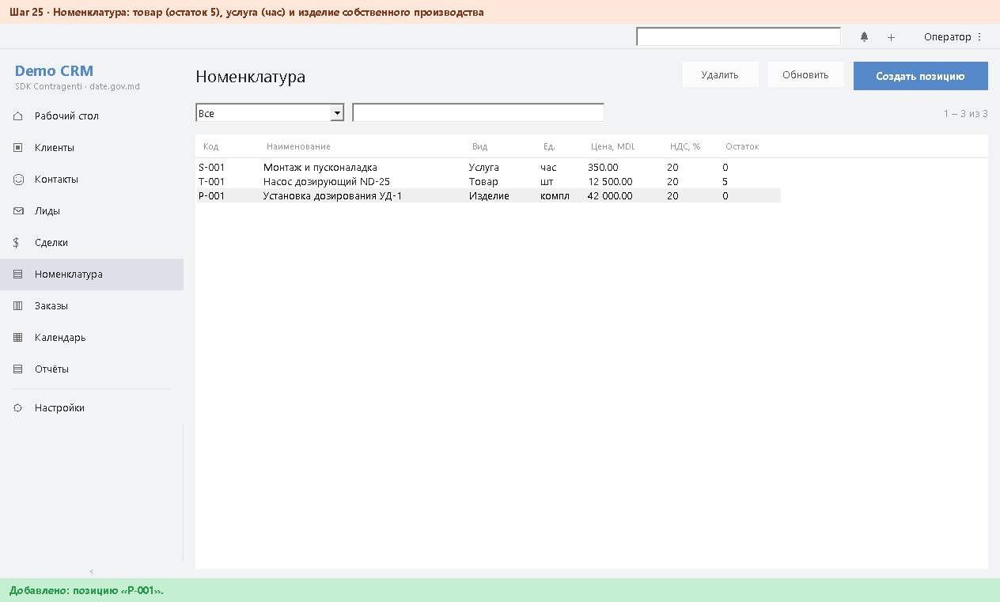
26Заказы: заказ на продажу №0001 — две строки (2 насоса + 8 ч монтажа), итого 27 800 MDL — OK
строк 2, итого 27800.00
Строка сообщений: Строка добавлена. Итого по заказу: 27 800.00 MDL
после шага: 26_order_lines.png
{kind=link}
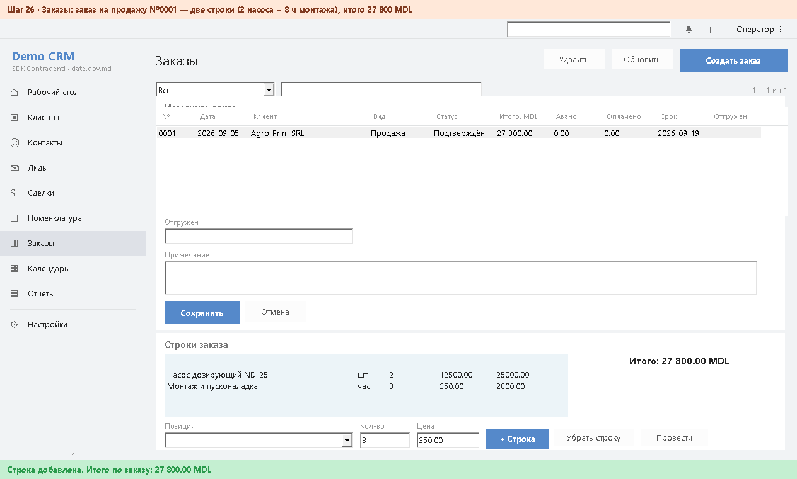
27Заказы: статус «Выполнен» + «Провести» — остаток насосов списан 5 → 3 — OK
остаток T-001 = 3; Заказ проведён: списано со склада по 2 строкам
Строка сообщений: Заказ проведён: списано со склада по 2 строкам
после шага: 27_order_posted.png
{kind=link}
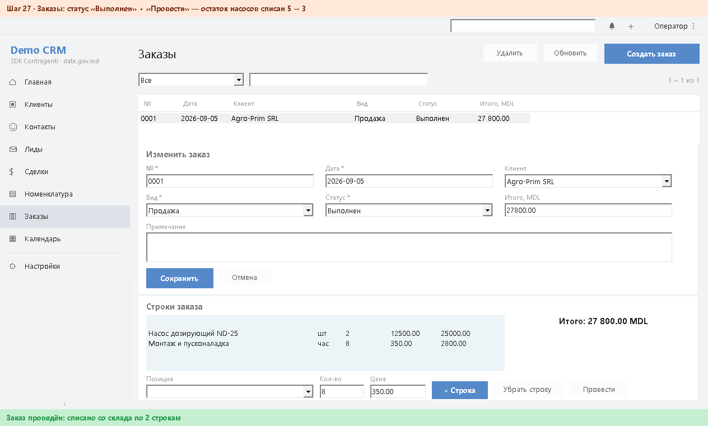
28Заказы: производственный заказ №0002 проведён — оприходовано 2 изделия (0 → 2) — OK
остаток P-001 = 2; Заказ проведён: оприходовано изделий по 1 строкам
Строка сообщений: Заказ проведён: оприходовано изделий по 1 строкам
после шага: 28_order_production.png
{kind=link}
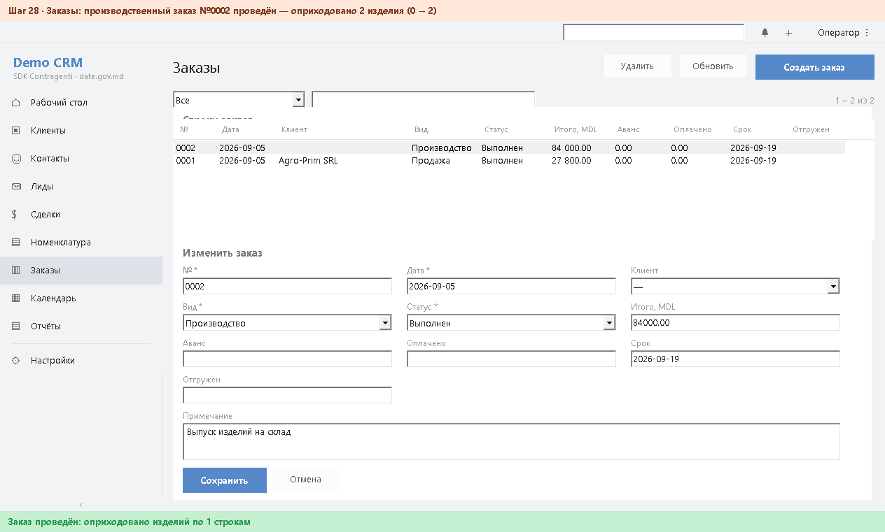
29Календарь: звонок (просрочен на 2 дня) и встреча через 3 дня — OK
открытых задач 2
Строка сообщений: Добавлено: задачу «Встреча: приёмка установки УД-1».
после шага: 29_tasks.png
{kind=link}
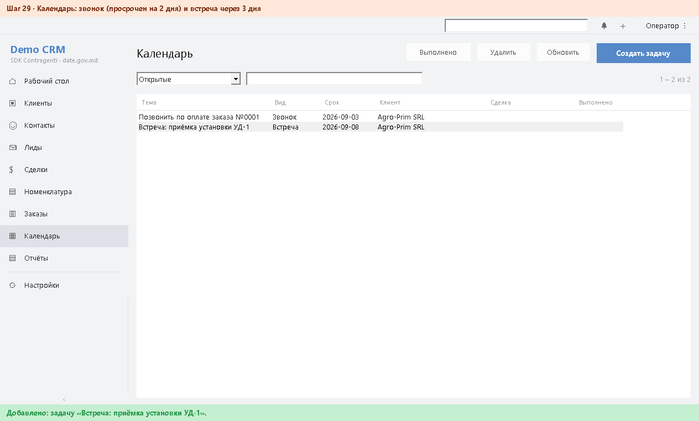
30Календарь: фильтр «Просроченные» — одна задача — OK
в списке 1
Строка сообщений: Фильтр: показано 1 из 2
после шага: 30_tasks_overdue.png
{kind=link}
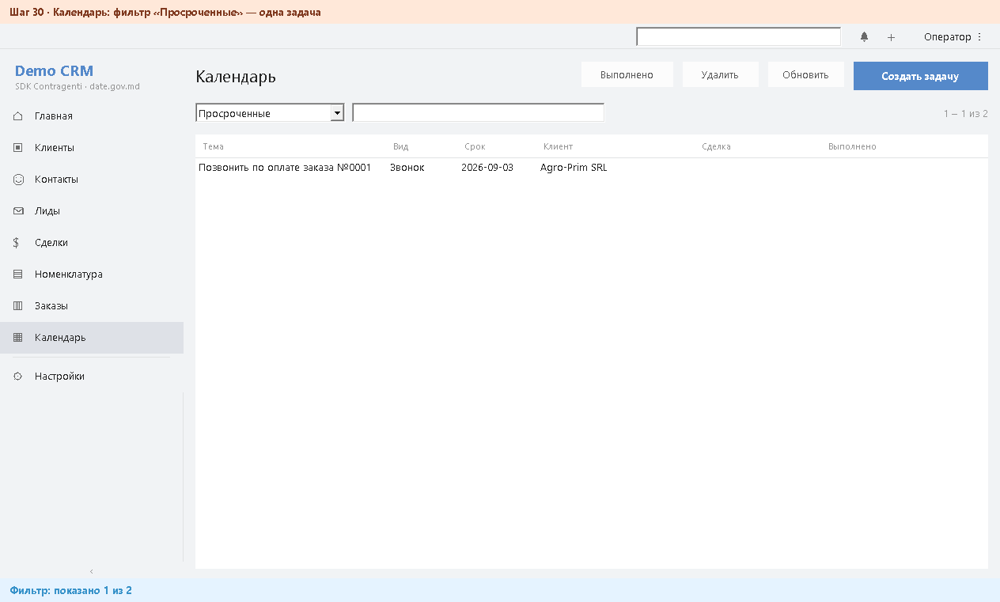
31Календарь: «Выполнено» — просроченная задача закрыта, список пуст — OK
в списке 0; Задача отмечена выполненной.
Строка сообщений: Задача отмечена выполненной.
после шага: 31_task_done.png
{kind=link}
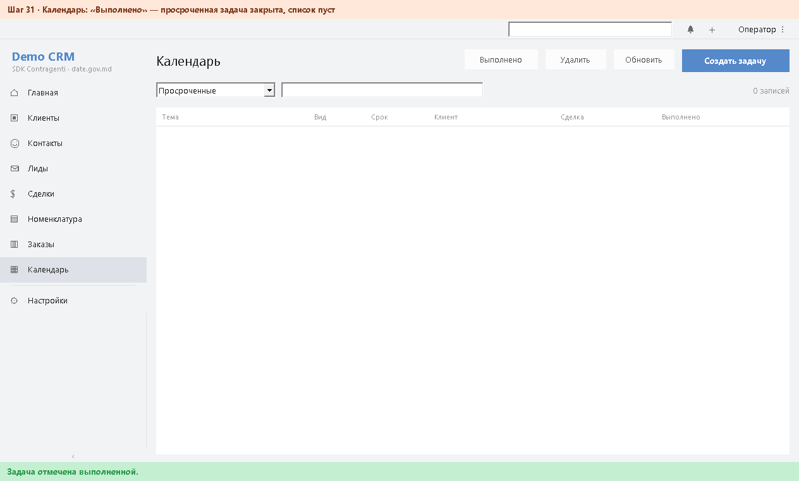
32Главная: показатели — клиенты, открытые сделки, заказы месяца, просроченные задачи, номенклатура — OK
клиенты=3, сделки=0 (0), заказы=111 800 (2), просрочено=0, номенклатура=3
Строка сообщений: Задача отмечена выполненной.
после шага: 32_dashboard.png
{kind=link}
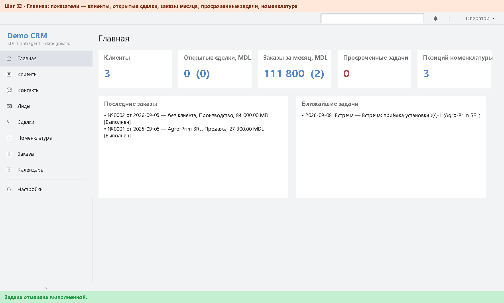
33Генератор тестовых данных: клиентов 13, контактов 20, лидов 12, сделок 11, номенклатуры 15, заказов 16 (строк 33), задач 24 — показатели на «Главной» — OK
KPI: клиенты=16, сделки=917 000 (7), заказы=111 800 (2), просрочено=2, номенклатура=18
Строка сообщений: Задача отмечена выполненной.
после шага: 33_seed_dashboard.png
{kind=link}
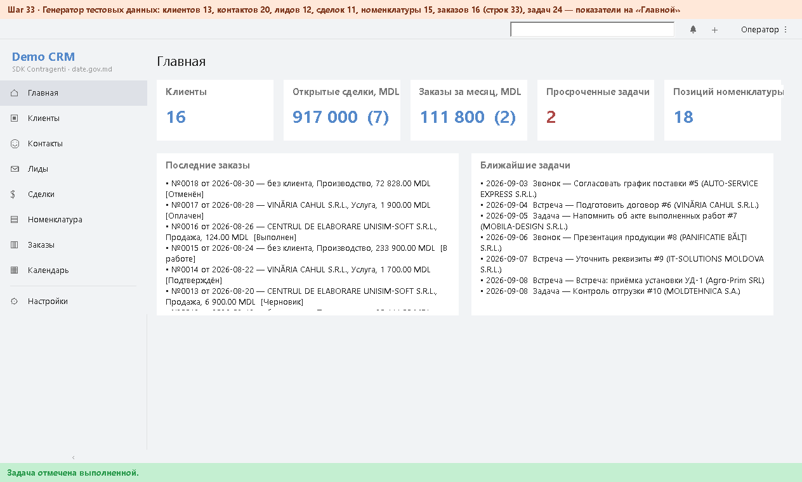
34Заказы на полном наборе: продажа / услуга / производство, все статусы — OK
в списке 18, в базе 18
Строка сообщений: Задача отмечена выполненной.
после шага: 34_seed_orders.png
{kind=link}
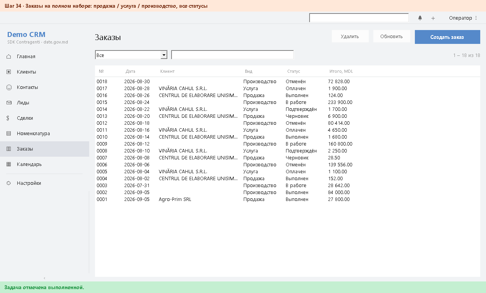
35Номенклатура на полном наборе: пресет «Нет на складе» — OK
без остатка 2 из 18
Строка сообщений: Фильтр: показано 2 из 18
после шага: 35_seed_items.png
{kind=link}
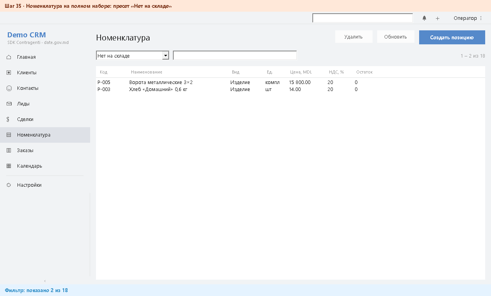
36Календарь на полном наборе: просроченные задачи выделены пресетом — OK
просроченных 2
Строка сообщений: Фильтр: показано 2 из 26
после шага: 36_seed_tasks_overdue.png
{kind=link}
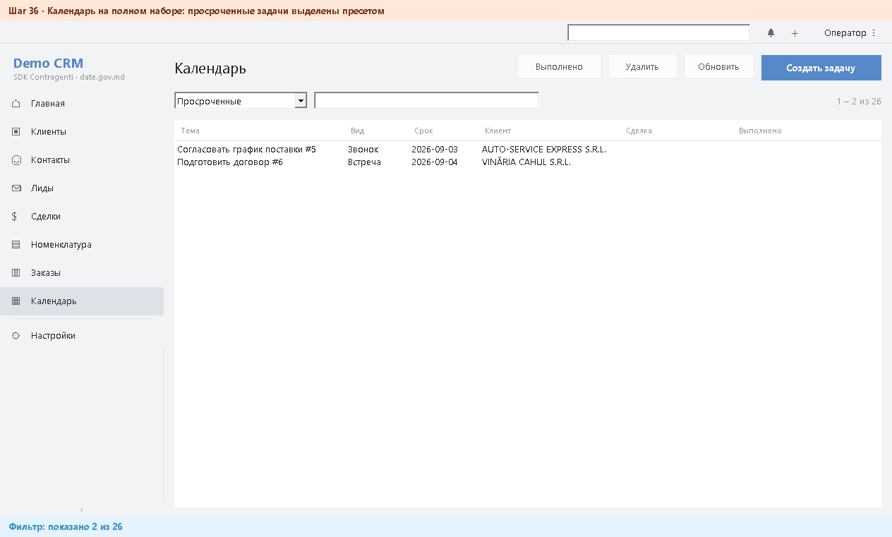
37Итоговое состояние окна: клиенты из SDK, лида и генератора — OK
в базе 16 клиентов
Строка сообщений: Фильтр: показано 2 из 26
после шага: 37_final.png
{kind=link}
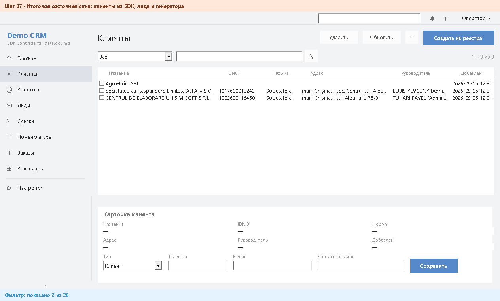